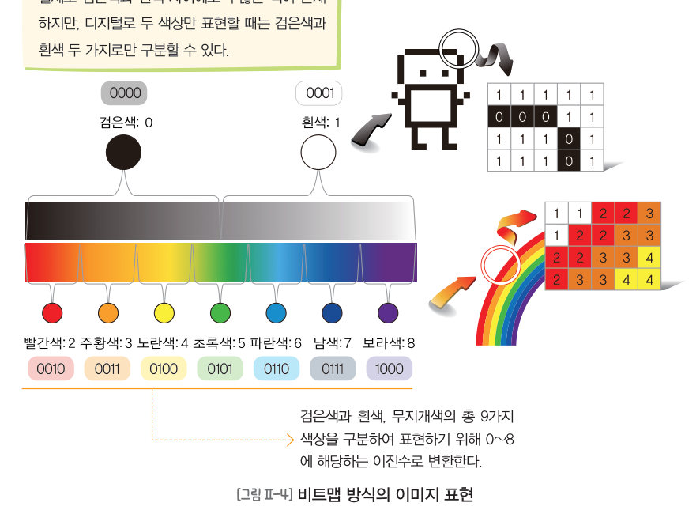
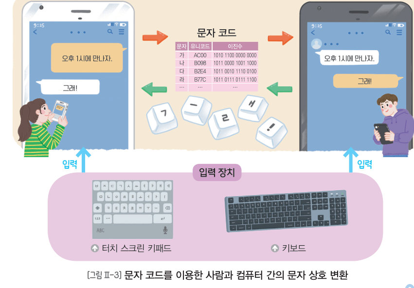
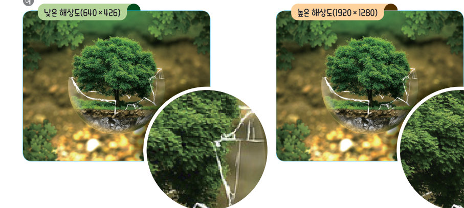
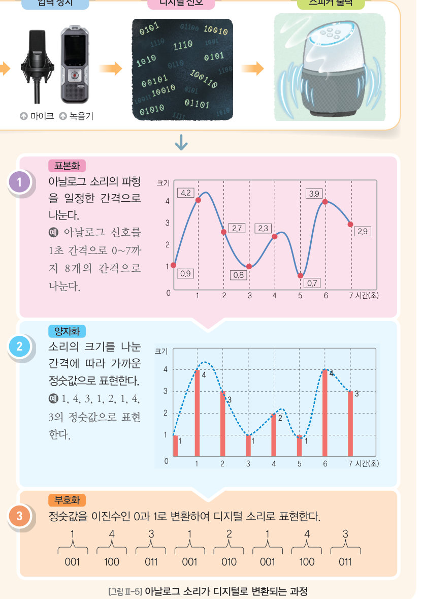
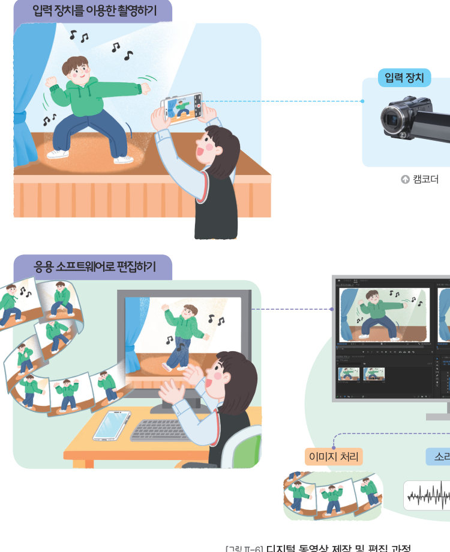

컴퓨터는 문자, 그림, 소리, 영상을 어떻게 0과 1로 바꿀까? 내 이름을 아스키 코드로 바꾸고, 하트를 픽셀로 칠해 이진수로 저장하고, 소리를 표본화·양자화해 직접 들어 보고, 프레임률을 바꿔 동영상을 비교한 뒤, 디지털 문자 변환 게임으로 마무리하자.
사람이 눈, 귀와 같은 감각 기관을 통해 인지하는 문자, 이미지, 소리, 동영상 등의 데이터는 아날로그 형식이다. 이러한 아날로그 데이터를 컴퓨터로 처리하기 위해서는 디지털 데이터로 바꾸어야 한다. 컴퓨터와 같은 디지털 기기는 꺼짐, 켜짐과 같이 두 가지 상태만 처리할 수 있기 때문에 데이터를 이진수(0과 1로만 이루어진 수의 체계)로 표현한다. 컴퓨터는 전기 신호의 높고 낮음을 구분하여 이진수로 데이터를 저장하고 처리하는데, 미세한 전기 신호를 명확하게 구분하기 어렵기 때문이다.
컴퓨터는 문자를 디지털로 표현하기 위해 0과 1의 이진수를 조합한 문자 코드를 사용한다. 디지털 기기에 ‘오후 1시에 만나자.’를 입력하면 기기 내부에서 문자 코드를 사용하여 이 문장을 이진수로 변환하고, 다시 이진수에 문자 코드가 적용되어 화면에 보여 준다. 대표적인 문자 코드에는 영문자, 숫자, 기호 등을 표현하는 아스키(ASCII) 코드와 다양한 언어를 표현하는 유니코드(unicode)가 있다.
| A | 1000001 | B | 1000010 | C | 1000011 | D | 1000100 |
| E | 1000101 | F | 1000110 | G | 1000111 | H | 1001000 |
| I | 1001001 | J | 1001010 | K | 1001011 | L | 1001100 |
| M | 1001101 | N | 1001110 | O | 1001111 | P | 1010000 |
| Q | 1010001 | R | 1010010 | S | 1010011 | T | 1010100 |
| U | 1010101 | V | 1010110 | W | 1010111 | X | 1011000 |
| Y | 1011001 | Z | 1011010 |
이미지를 디지털 데이터로 표현하는 방식에는 픽셀로 표현하는 비트맵 방식과 수식을 이용하여 점과 선으로 표현하는 벡터 방식이 있다. 비트맵 방식은 이미지를 픽셀 단위로 구분하여 표현하며, 픽셀 하나는 한 개의 색상을 표현할 수 있다. 이미지를 표현하는 데 몇 개의 픽셀이 사용되었는지를 나타내는 해상도가 높을수록 이미지를 실제와 같이 표현할 수 있다. 컴퓨터는 색상 코드를 사용하여 픽셀 정보를 숫자로 저장하고 표현한다. (BMP: 용량이 크다, JPG: 사진을 고화질로, PNG: 고화질 저용량)

소리는 물체의 진동으로 생긴 파형이 공기를 통해 전달되는 것으로 디지털 기기에서 변환 과정을 거쳐 디지털로 표현된다. 아날로그 소리의 파형을 일정 간격으로 나누고(표본화), 소리의 크기를 가까운 정숫값으로 표현한 뒤(양자화), 이진수로 변환하여(부호화) 디지털로 표현하는 과정을 거친다. (WAV: 용량이 크다, MP3: 들을 수 없는 소리를 삭제한 압축 형식, MID: 전자 악기와 컴퓨터 간 데이터 교환용)

| 소리의 파형을 일정한 시간 간격으로 나눈다. | |
| 각 간격의 소리 크기를 가까운 정숫값으로 나타낸다. | |
| 정숫값을 0과 1의 이진수로 바꾼다. |
정지된 이미지를 프레임이라고 하고, 텔레비전 화상처럼 움직이는 영상을 동영상이라고 한다. 동영상은 이미지, 소리, 문자를 모두 포함할 수 있다. 동영상은 여러 개의 프레임을 빠른 속도로 넘겼을 때 생기는 잔상 효과를 이용한 것이다. 1 초 동안 보이는 프레임의 수를 프레임률(FPS, frames per second)이라고 하며, 이는 동영상의 품질을 결정한다. 프레임률이 높으면 움직임이 자연스러운 동영상을 볼 수 있지만, 용량은 커지게 된다. (AVI: 용량이 크다, MP4: 저용량 고화질, MOV: 애플의 저용량 고화질)

모스 부호를 변형하여 만든 ‘디지털 문자 변환표’를 이용하여 단어를 이진수로 변환하고 다시 문자로 변환하는 게임을 해 보자. ① 변환할 문자를 정해 전달하기 ② 변환표로 이진수로 바꾸기(예: 파이팅 → 111 0 101 001 1100 001 101) ③ 이진수를 다시 문자로 바꾸기(→ ㅍ ㅏ ㅇ ㅣ ㅌ ㅣ ㅇ) ④ 단어를 만들어 정답 외치기
| 자음 | 이진수 |
|---|---|
| ㄱ | 0100 |
| ㄴ | 0010 |
| ㄷ | 1000 |
| ㄹ | 0001 |
| ㅁ | 11 |
| ㅂ | 011 |
| ㅅ | 110 |
| ㅇ | 101 |
| ㅈ | 0110 |
| ㅊ | 1010 |
| ㅋ | 1001 |
| ㅌ | 1100 |
| ㅍ | 111 |
| ㅎ | 0111 |
| 모음 | 이진수 |
|---|---|
| ㅏ | 0 |
| ㅑ | 00 |
| ㅓ | 1 |
| ㅕ | 000 |
| ㅗ | 01 |
| ㅛ | 10 |
| ㅜ | 0000 |
| ㅠ | 010 |
| ㅡ | 100 |
| ㅣ | 001 |
| ㅐ | 1101 |
| ㅔ | 1011 |
| 02 문자, 이미지, 소리, 동영상과 같은 실생활 데이터는 컴퓨터 내부에서 모두 아날로그로 처리된다. |
| 평가 기준 | 스스로 평가 |
|---|---|
| 컴퓨팅 사고력 문자, 이미지, 소리, 동영상을 컴퓨팅 시스템에서 표현하는 방법을 설명할 수 있는가? | |
| 컴퓨팅 사고력 다양한 데이터를 디지털 형태로 표현할 수 있는가? | |
| 가치·태도 모둠원과 협력하여 변환 게임의 각 단계를 해결했는가? |